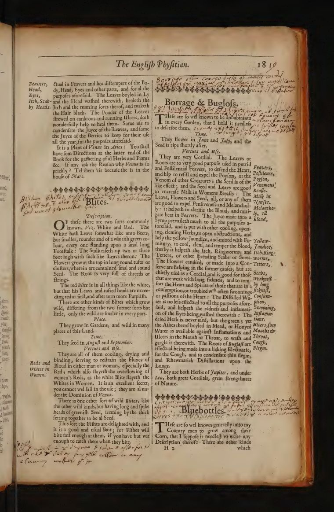
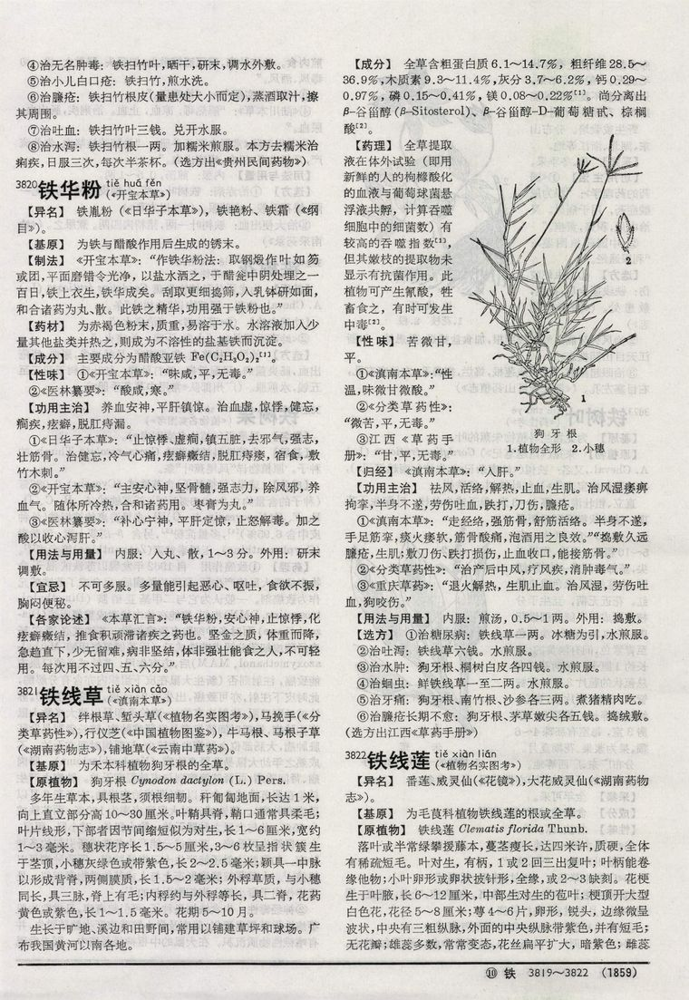
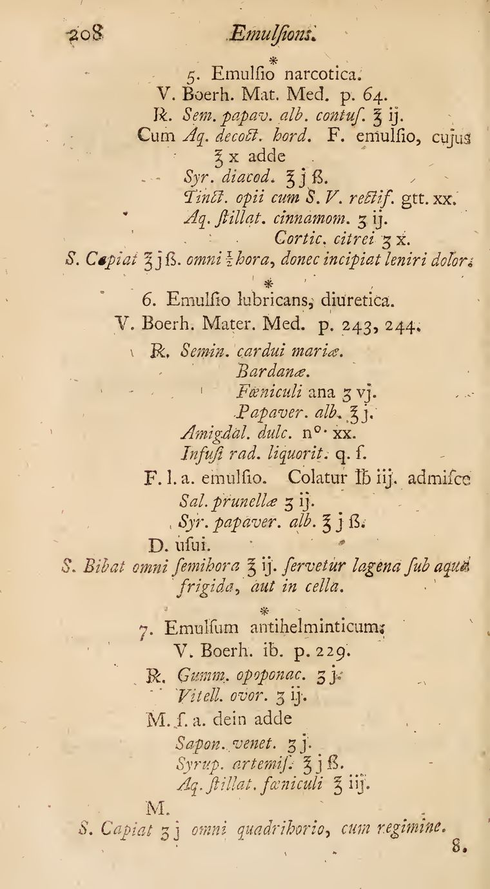
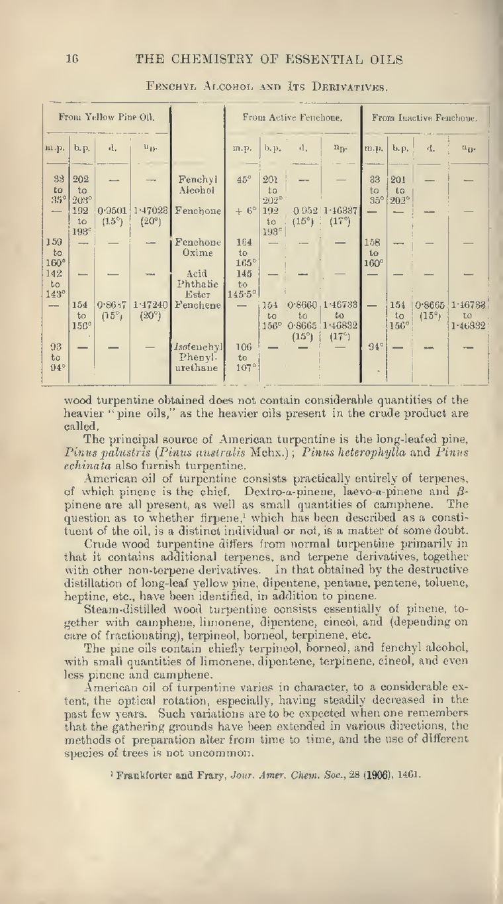

WHL Reader
Two viewers, six books, live on extracted corpus layers. Design brief: DESIGN.md · agent rules: AGENTS.md.
Explorer
Visual-first · floating window · dual sidebars
Papyrus EbersThebes, c. 1550 BC · hieratic roll Ben Cao Gang Mu 本草纲目Li Shizhen · Hongbaozhai ed., 1888
The English PhysitianCulpeper · London, 1652Reader
Study & facsimile · two-pane · knowledge sidebar

Zhongyao da cidian 中药大辞典vol. 2 · 1977
The Extemporaneous DispensatoryGaubius · London, 1741
Chemistry of Essential OilsParry · 1918
Delivery architecture
Component library: lib/API.md
WHL reader-next · no backend · layers stream from static JSON